The Depth Map Editor
Fix a depth map by hand, object by object, before Splatting uses it. An AI called SAM 3 picks out the object for you and follows it through the clip; you decide how its depth should change.
11 When to fix a depth map #
DepthCrafter gets most shots right, but sometimes an object comes out wrong: a sign that should be flat bulges, a person merges into the wall behind them, a road that should run into the distance is flat, or something is missing from the depth altogether. In 3D that object then sits at the wrong depth, or bends.
You'll usually notice it in Splatting's preview. From there, the round trip is:
- In Splatting, with the clip in the preview, press Edit Depth Map. The editor opens on the Extra tab with that clip and its depth map loaded.
- Select the object, track it through the clip, and change its depth (sections 13 and 14).
- Press Render Edited Depth. Studio asks whether to use it in Splatting: choose Use in Splatting.
- You're back in Splatting, on the same clip, now reading the edited map. Its clip in Upcoming Jobs gets a pencil badge.
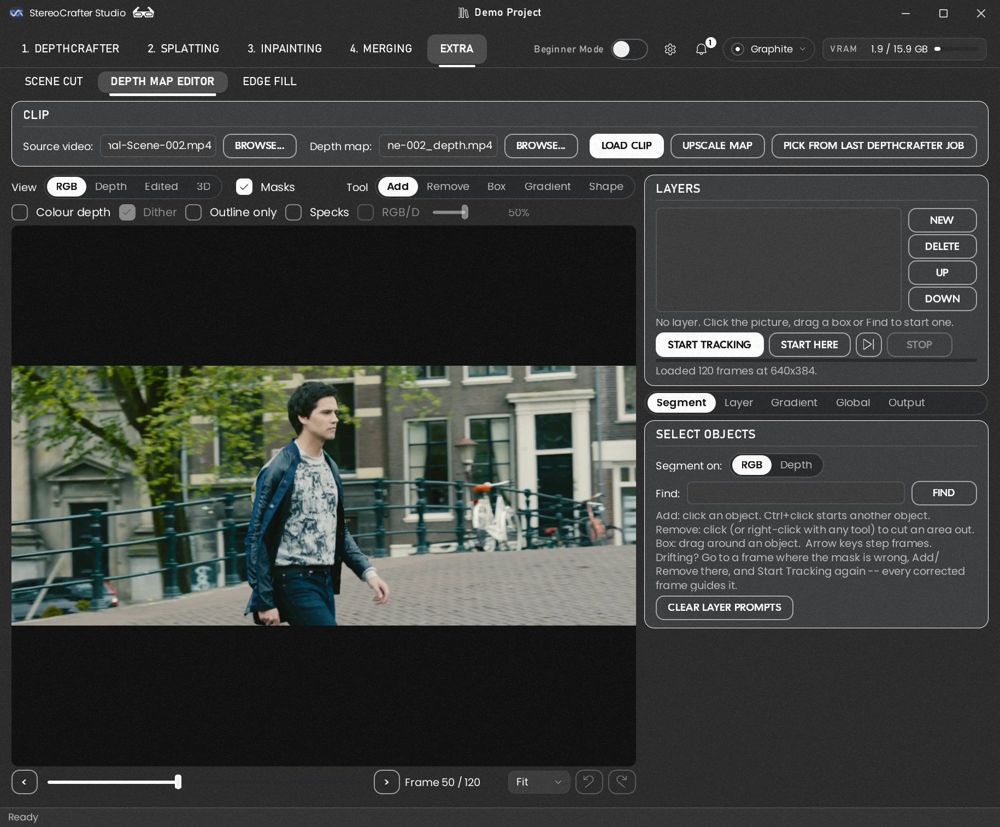
1 2 3 4 5 6Opening a clip yourself
In the Clip panel, pick the Source video (the colour clip) and the
Depth map (filled in for you when <clip>_depth.mp4 is
found beside it), then press Load Clip.
Pick From Last DepthCrafter Job lists the clips DepthCrafter made last.
If you've edited a clip before, your edit opens again with it.
Looking at the clip
- View: RGB (the colour clip), Depth (the original map), Edited (the map with your changes) and 3D (section 15).
- Masks tints each object you've selected in its layer's colour; Outline only draws just its edge. Colour depth shows depth in colour instead of grey, where small steps are much easier to see; it uses the map's full 10 bits, so even one level of difference changes the colour. Dither (on by default) shows the grey in the same detail: the map has about 900 shades but the screen only 256, so a gentle slope like a wall or floor would show as flat bands; a faint fixed pattern brings back the shades in between. Only the picture changes: the rendered map is always the full 10 bits. RGB/D (RGB over depth) lays the colour clip over the depth, to check that edges line up. Specks tints the bright specks DepthCrafter leaves on the left edges of things -- see Taking out left-edge specks, below.
- Step through frames with the slider, the < > buttons, or the arrow keys.
- Zoom in with the mouse wheel, about the point under the pointer, as in Splatting and Merging; drag with the middle button to move around. The Zoom box after the frame counter picks a size, or Fit for the whole frame again. In the 3D view's Right Eye + Holes, which takes no clicks, the left button drags too and a double-click zooms in, or back to Fit.
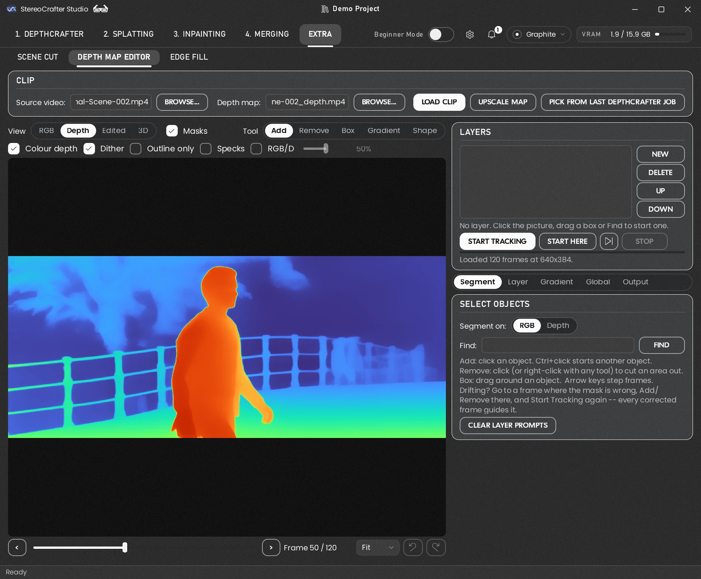
12 Setting up SAM 3 #
SAM 3 is the AI that finds and follows objects. It isn't installed with Studio, because its model file is large and its makers ask you to request access first. Set it up once, from the Segment page:
- Packages. Press Install Packages. It shows what it will add before doing anything, and never removes anything.
- Access. SAM 3's model is gated: request access on its Hugging Face page,
huggingface.co/facebook/sam3, then sign in to Hugging Face in Settings → Studio → Models (or runhf auth loginin a terminal). - The model. Press Download Weights. About 3.4 GB lands in
weights/SAM3, with a bar showing how far it has got. Stop ends it at once; what came down is kept, and the next Download Weights carries on from there. It's the same download as SAM 3's row in Settings → Studio → Models.
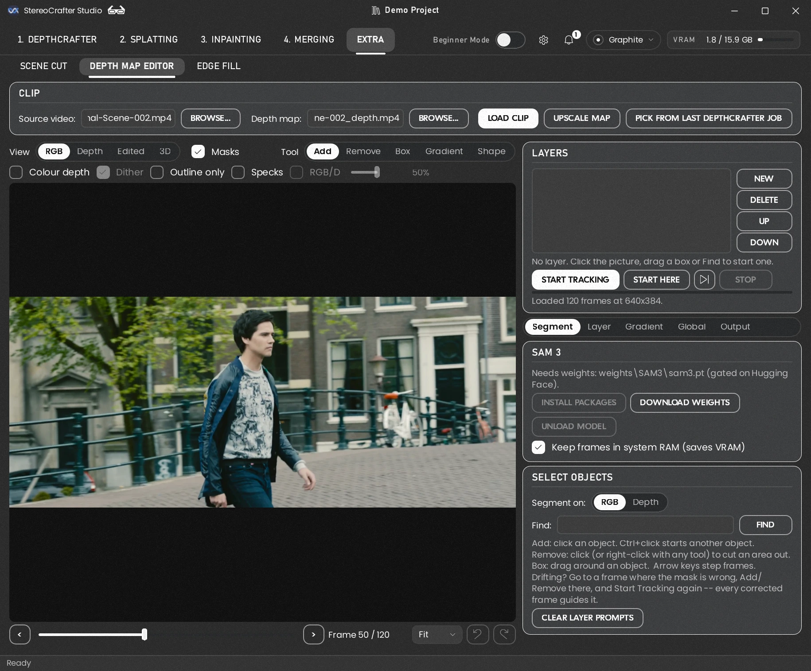
Graphics memory
- SAM 3 needs about 4 GB of graphics memory. It loads on your first click and stays loaded; Unload Model frees it straight away, and Studio frees it by itself when another stage starts a job.
- Keep video frames in system RAM saves graphics memory on long clips (each frame otherwise takes about 6 MB on the card), at some cost in speed.
The same three things are in Settings (with the Depth Map Editor showing, under Extra → SAM 3), along with Uninstall SAM 3…. It moves the model file (several GB) to the Recycle Bin, so you can restore it from there; the small packages stay installed. To use SAM 3 again, press Download Weights.
13 Masking objects #
Every change you make lives in a layer. A layer is one selection (one or more objects, its mask) plus the depth change applied inside it. Layers apply from the bottom of the list up, so a layer sees the changes of the layers below it.
Selecting an object
On the Segment page, pick a Tool above the picture:
- Add: click the object. Click again elsewhere on it to add to the selection; Ctrl+click starts a second object in the same layer.
- Remove: click an area to cut it out of the mask. Right-click removes with any tool.
- Box: drag a box around the object.
- Find: type what it is, such as person, car or road, and press Find. SAM 3 selects every one on the frame, and while tracking it also picks up new ones that come into the shot.
- Shape: draw the mask yourself, for a static camera shot -- it holds on every frame and nothing is tracked. See Drawing a mask with Shape below.
Clicking with no layer selected starts a new one; so does New. Segment on chooses which picture SAM 3 looks at: RGB (the usual, and the only way to catch an object the depth map missed) or Depth (for shapes that are clear in depth but busy in colour).
A click that went wrong can come out again: click its dot on the picture to pick it (a yellow ring shows it), Shift+click to pick more, and press Delete. SAM 3 works the mask out again from the clicks that are left; delete a frame's last clicks and its mask goes with them. Undo puts them back, and Esc lets go of the pick. A click on a dot only picks it -- it adds no new click.
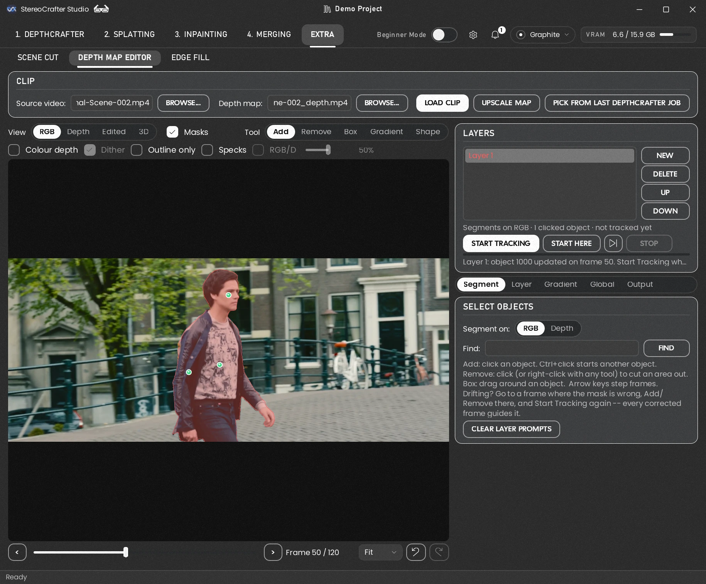
Drawing a mask with Shape
Use Shape on static camera shots -- a locked-off camera on a tripod, or one that rides with what it films (a car's interior seen from the dashboard). Anything that holds still on screen there sits in the same place on every frame, so there's nothing to track: you draw its outline once and the layer uses it on every frame. SAM 3 doesn't run at all, so it's instant and never drifts or flickers the way a tracked mask can on something hard to follow -- a window, a wall, a sign, a doorway, a TV screen. If the camera moves (a pan, a push-in, a shake), the shape stays put while the picture moves under it; track those with SAM 3 instead.
Pick Shape in the Tool row; a row under it chooses the kind:
- Points: click each corner of any outline. A line from the last point follows the pointer. Close it by clicking the first point again, double-clicking, or pressing Enter; it needs three points or more. Right-click or Backspace takes the last point back, and Esc drops the shape.
- Rectangle and Ellipse: drag one out.
Hold Ctrl as you start a shape to cut its area out of the layer instead (it draws red while you place it, yellow when it adds) -- a window frame's centre bar, a hole in a sign. Shapes apply in the order they were drawn, so a cut takes out what was drawn before it. A layer can hold any number of shapes; Clear Shapes takes them all off it (Undo brings them back, and every shape is its own Undo step). Changing the tool, the kind or the layer drops a shape you've started but not closed.
To lengthen or trim one side of a shape, drag that side. Point at an edge of a Points or Rectangle shape on the selected layer (the pointer turns into a double arrow) and drag it: an upright edge moves left or right, a flat one up or down, and the rest of the shape stays where it is -- drag the end of an L-shaped outline outwards and that arm gets longer. A slanted edge moves whichever way it's closer to. Each drag is one Undo step.
A shape goes on the selected layer when it's a shape layer or still empty. With a tracked layer selected, the shape starts a new layer of its own (Shape 1, Shape 2...), so tracking never wipes a shape and a shape is never tracked. Draw in the 2D views (zoom in with the wheel for a close outline; the middle button pans). From there a shape layer works like any other: Alter, Add or Erase on the Layer page, its edge and depth settings, keyframes, and its frame range if the change should only apply to part of the clip. The shapes are saved with the project as outlines, not pictures, so they stay sharp at any size -- after Upscale Map and in a render at the source's resolution. For dust or reflections on glass, draw the windows with Shape and use Erase from Clip's Dust or Static (below).
Tracking it through the clip
A selection starts on one frame. Press Start Tracking and SAM 3 follows the layer's objects through every frame, forwards and backwards from where you selected them. The edit only applies to the whole clip once the layer is tracked.
Start Here, beside it, tracks from the frame you're on in one direction only, and leaves every other frame's mask as it is. The arrow next to it picks the direction: on over the next frames (this one included), or back over the previous ones. Use it when the start of a shot is already right and only the rest needs tracking again, or the other way round. The thin line under the buttons shows how far tracking has got.
Patches. On a layer that's already tracked, an Add click or a Box outside its mask -- a piece the tracking missed -- is tracked on its own and added to the layer's masks. The layer's own tracking, a text search's included, isn't redone around it.
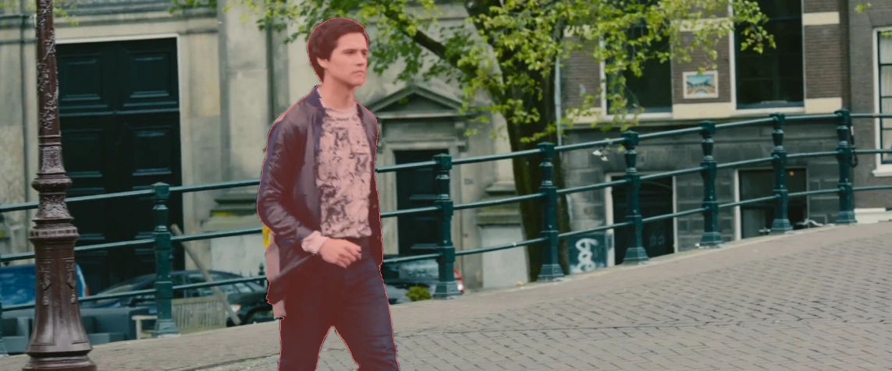
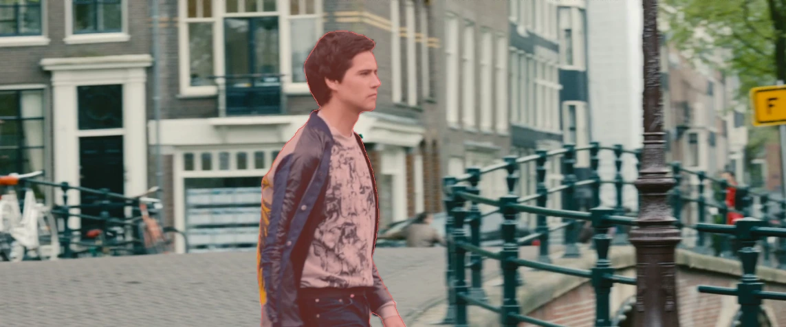
Managing layers
- Up and Down change the order layers apply in; Delete removes one.
- On the Layer page, On switches a layer's edit off without losing it, and Name labels it.
- Clear Layer Prompts forgets a layer's clicks, boxes and text and its mask, but keeps its depth settings.
- Undo and Redo, the two arrows after the frame counter (or Ctrl+Z and Ctrl+Y), step back and forth through your edits: clicks and boxes, tracking, new and deleted layers, every dial, keyframes, gradients and the whole-frame settings. Hover over an arrow to see which edit it will undo or redo. A whole drag of a dial counts as one step, and so does typing a layer's name. They wait while a job such as tracking is running, and Load Clip or Upscale Map starts the history afresh. While you're typing in a box, Ctrl+Z undoes the typing instead.
14 Changing depth inside a mask #
With a layer selected, the Layer page sets what happens to the depth inside its mask. Watch the Edited view (or 3D) as you go.
Mask Edge
- Edge snap: pulls the mask's edge onto the depth map's own edges, so the change lands exactly where the depth changes.
- Grow: widens (+) or narrows (−) the area the change applies to, to cover a halo of wrong depth or keep off the background. Feather fades the change in at the edge; Fill holes in the mask fills gaps SAM 3 left, such as between an arm and a body.
- Close gaps: seals tears and notches up to about twice this wide where they reach the mask's edge -- gaps Fill holes can't close, since it only fills holes the mask surrounds. The outline elsewhere stays where it is.
- Steady: evens out a tracked mask over this many frames either side. A pixel stays in the mask when at least half the frames around it have it, so an outline that SAM 3 draws a little differently every frame -- the foot of a post with no strong edge to hold on to -- stops shimmering in 3D. Best on a locked-off shot or a slow object; on fast movement keep it low, or the mask trails a little.
Depth Inside the Mask
First choose what the mask is for, with the Mask switch at the top:
- Alter (the usual): the mask picks out an object, and the settings below change the depth that's already there.
- Add: the mask is the object. Use it when the depth map missed something, or made it a blob, like a mannequin that came out as a few polygons. Inside the mask, the depth is replaced by Depth; Sample takes it from the object itself, the nearest part of what the depth map has there. Push / pull and the gradient still work on top, to give the shape some roundness. Edge snap is off in Add, since the mask's outline is the point; segment on the RGB so the outline is the real one. The rest of Alter's settings work in Add too: Top edge, Bottom edge, Left edge and Right edge move that edge of the shape, and Smooth, Contrast and Flatten shape a gradient's depth (a shape without one is flat, so they have nothing to change).
- Erase: the object is taken out. Its depth is filled from the depth around it, and Erase from Clip takes it out of the video itself -- see Erasing an object, below.
In Alter, the settings are:
- Despeck (with its Strength): the bright specks DepthCrafter leaves just inside the left edges in the mask come down to the object's own depth -- see Taking out left-edge specks, below. Off until you turn it on.
- Brightness: moves the object nearer (+) or further (−).
- Contrast: stretches or squashes the depth differences inside the object. 0× makes it perfectly flat.
- Flatten: pulls the object toward one depth without moving it. Good for screens, signs and walls.
- Smooth: blurs the depth inside the object only, removing noise without softening its edge.
- Opacity: how strongly the whole change applies.
- Top edge, Bottom edge, Left edge and Right edge move only that edge of the object's depth; the opposite edge stays put. Negative pulls the edge in (the depth behind shows there), positive pushes it out. A negative Top edge fixes, for example, a beam that Splatting's Dilate Y bent upward; Left and Right do the same sideways, for depth that spills past an object on one side.
Example: vertical warping
Splatting only ever shifts pixels sideways, but its Dilate Y spreads a near object's depth up and down into whatever is behind it. Here the railing's depth has spread into the wall, so the wall's slats shift with the railing and bend around it. The fix is in the depth map: select the railing, track it, and pull its depth edges back in with a negative Top edge and Bottom edge, so the wall keeps its own depth. The slats then come out straight. In a static shot, where the camera and the railing stay put, draw the railing with the Shape tool instead (Drawing a mask with Shape): one mask covers the whole clip, with no SAM 3 and nothing to track.
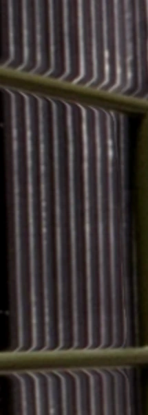
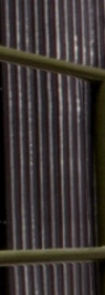
Frames
Limit a layer to part of the clip: In starts it at the current frame, Out ends it there, All uses every frame.
Keyframes
A layer's settings can change over the clip, as in Splatting. On a frame, set the layer's sliders and press S for a static key (the values hold from here until the next key) or D for a dynamic key (the values slide smoothly to these from the key before) -- a mannequin's depth that comes nearer as the camera passes it, say. The keys show on the frame slider, blue static and orange dynamic, and the sliders follow them as you scrub. On a key, moving a slider changes that key; between keys, moving one adds a dynamic key there, so the change shows straight away (as in Splatting). A gradient's Sample From Object does the same. ‹ and › jump between keys, Delete removes the one on this frame and Clear removes them all. The number settings are keyed (Depth, Push / pull, Contrast, Flatten, Smooth, the edge moves, Grow, Edge snap, Feather, Opacity and the gradient's ends, curve and detail); the choices -- Alter / Add / Erase, Fill holes, the gradient's shape -- and the frame range stay the layer's own. Keys are saved with the project.
The ∿ button beside the key buttons opens the Shaper for the dynamic key the playhead is heading for: how the values travel into it -- a steady ramp, an ease, an LFO swinging between the two keys' looks, or your own points and bends. It works as in Splatting (Part 2, 8d).
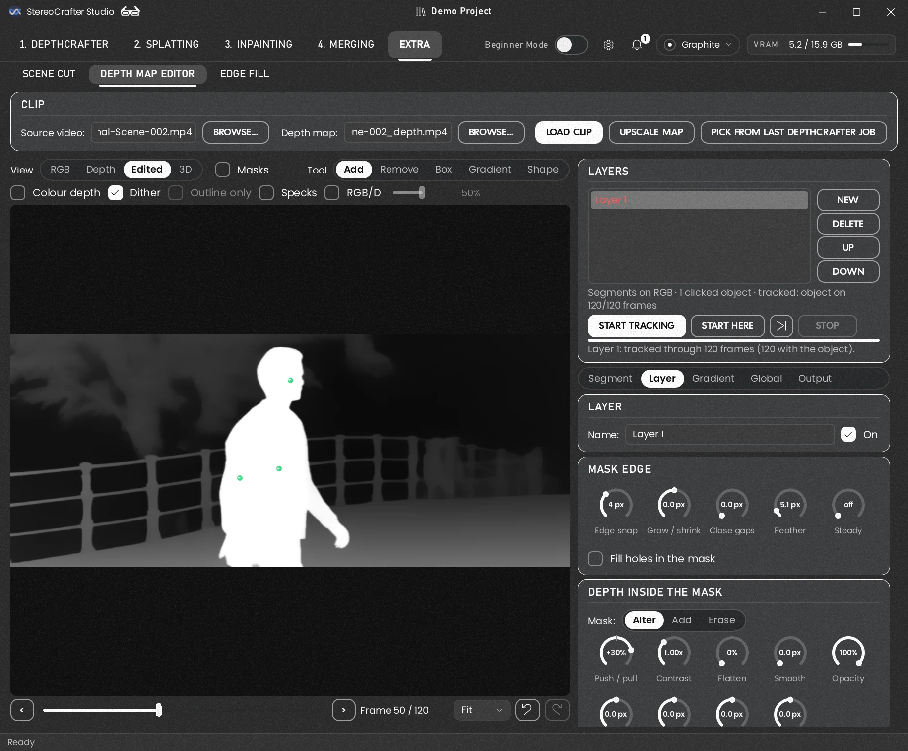
Gradients, for things that recede
A road, a floor, a long wall or a table seen at an angle should run from near to far, but depth models often flatten them. On the Gradient page, tick Paint a depth gradient inside the mask, pick the Gradient tool, and drag on the picture from the object's near end to its far end.
- Shape: Linear along your line, or Radial outward from its near end, for round objects.
- Blend: Replace makes the ramp the new depth; Only nearer and Only further can only move pixels one way; Add tilts the existing depth.
- Near, Far and Curve set the ramp; Detail keeps some of the object's own surface on top of it. Sample From Object fills Near and Far from the object itself, a good start.
- Follow the object as it moves pins the ramp to the object, so it moves and scales with it.
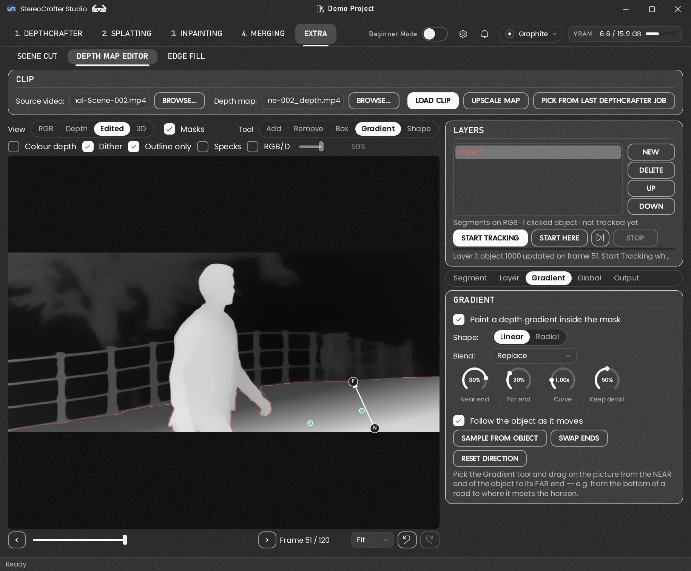
Taking out left-edge specks
Now and then DepthCrafter leaves a bright speck, or a soft bright glow, just inside the left edge of an object -- the tip of a horn, a shoulder, the corner of a chair -- most often when nothing nearer is in front of it. In 3D it pokes out of the object into the background as a spike. To take them out:
- Turn on Specks beside the View. Every speck on the frame is tinted by how far it would come down: cyan where no layer with Despeck on covers it yet, orange where one does.
- Make a layer for the object with the cyan speck (or use the one you have), track it, and in Alter turn on Despeck. The speck turns orange and, in the Edited view, comes down to the object's depth. Step through the clip to check it holds. It goes first, so the rest of Alter -- Brightness, Contrast and so on -- works on the cleaned depth.
- There is no level to pick: on every frame, each speck is lowered to the depth of the object just beside it, so a glow that fades in and out, or an object that moves, needs nothing more than the tracked mask. Only the left edges inside the mask change.
- Strength is how far they come down (100% all the way). A thing whose left side really is nearer, like a face turned three-quarters, can lose a little there -- lower Strength, or keep the layer to the frames that need it. Turn Despeck off and on again to compare; off, its specks show cyan under Specks.
- A small thing with a white dot inside a grey body -- a floating particle -- has nothing beside it for Despeck to go by. Mask the particle snugly and turn on Level to edge: anything in the mask brighter than the grey around its outer edge comes down to that grey, on every frame. A particle that really is near is white all the way to its edge, so it stays as it is. Strength works on it too.
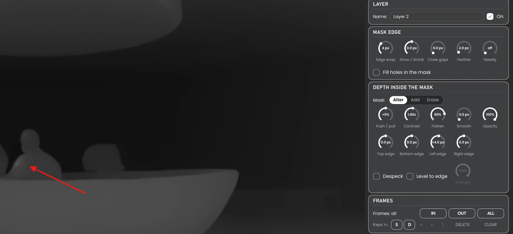
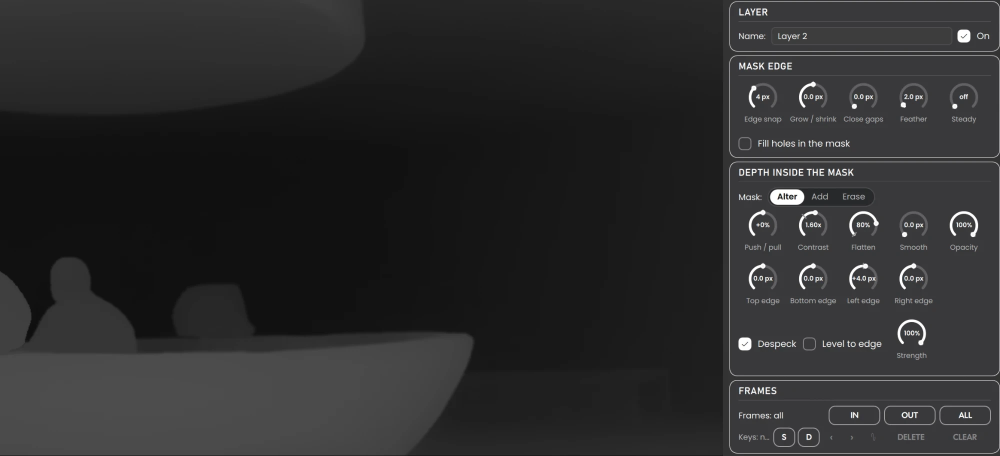
Erasing an object
Some things are better out of the shot than at the wrong depth: a sign, a pole, a logo, a mark on the lens, or reflections on glass. Make a layer for them, set its Mask switch to Erase, and track it through the clip. In the depth map, the object's depth is then filled from the depth around it. To take it out of the video as well, use the Erase panel on the Layer page:
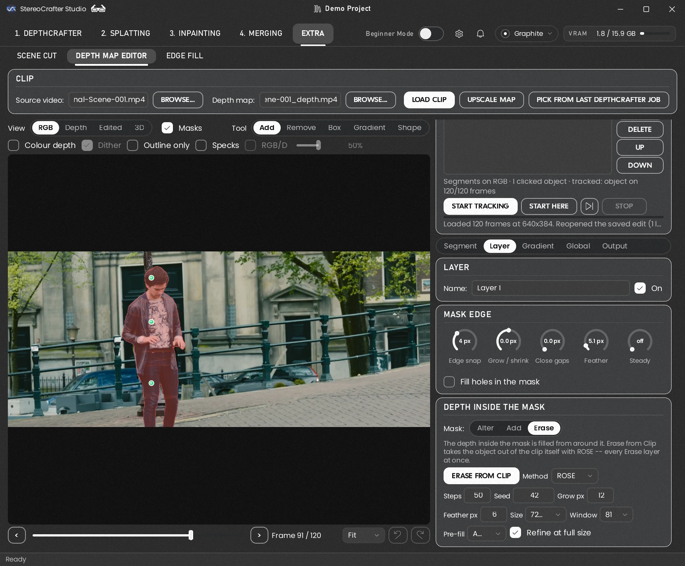
- Method: ROSE takes an object out, along with its shadow, reflection or glow, and fills its place with an AI video model. Static takes off reflections that hold still on glass in a locked-off shot -- a TV screen or a shop window, where the camera and the lights don't move but what's seen through the glass does. Static needs no model and no graphics card, and takes seconds. Dust takes dust and specks off glass the camera rides with -- a windshield seen from inside a car -- where they hold still on screen while the world moves behind. Each frame's own dust comes off, however the light on it changes, and Merging's Put Back lays it back on the glass (Add, Glass Plane). Draw the windows with the Shape tool; Size px is the widest speck taken (9 for a 1920-wide clip). It reads the clip twice and uses the graphics card briefly. With Dust or Static the Erase layers leave the depth map as it is -- the glass is seen through, so the depth behind it stays; only ROSE fills the depth where its object was.
- Erase from Clip takes every enabled Erase layer's object out of the clip. Only
the frames with something to erase are processed, and only the area inside the mask changes; every other
pixel stays the original. The clip is replaced where it is, so Splatting and DepthCrafter use the erased
one; the original and the erase mask are kept in
edit_historybeside it. With ROSE it's slow, minutes per 81 frames; Stop ends it. - ROSE's settings: Steps (fewer is faster and softer; 50 is ROSE's own, 20 to 30 is enough to judge a mask), Seed (another seed gives another fill to compare), Grow px (how far past the object it repaints -- a little takes its soft edge, more reaches a shadow the mask missed), Feather px (how softly the result blends in), Size (480p is what ROSE was trained at; larger is sharper but slower and needs more memory) and Window (frames per pass: 81 keeps the fill steadiest, shorter needs less memory -- a shorter clip runs at its own length). Static has one, Size px: the widest reflection shape it takes.
- Pre-fill: ROSE normally sees the object under its mask, which is how it takes the object's shadow and reflection along. A big object -- a person filling a close-up -- can come back redrawn instead of removed. Pre-fill blends the object out from around it first, so ROSE invents what's behind it. Auto turns it on when the object covers 10% of the frame or more.
- Refine at full size runs ROSE a second time at the clip's own size, in tiles (3×2 at 1080p, only those with something to erase), over the first pass: sharper, with the colour kept from the first pass. It takes about as long again, or longer.
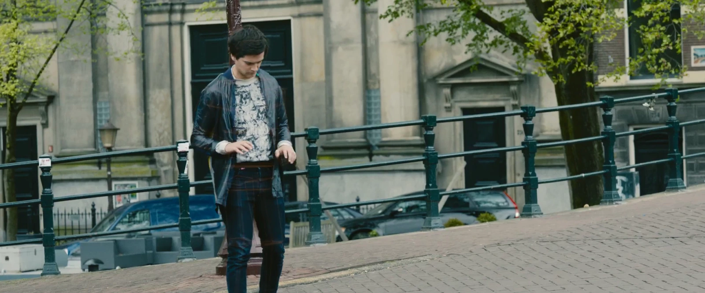
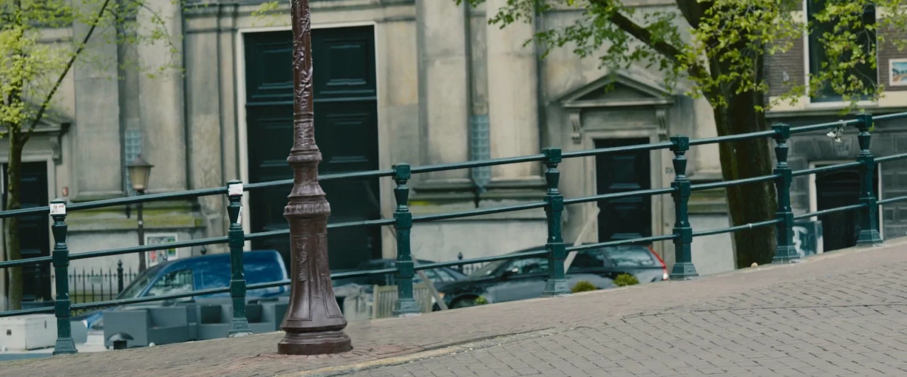
Setting up ROSE. ROSE runs in its own environment, in weights/ROSE, because it needs
older libraries than Studio. Until it's there, the panel offers Set Up ROSE,
which fetches ROSE and about 3.7 GB of model files (it needs git and uv). Static doesn't need it.
Putting it back at its own depth. Once a clip is erased, Put back lays what came off back into the finished 3D, at a depth of its own, in Merging:
- Add adds back what erasing took away -- for glass, reflections, rain, smoke: anything seen through. Over lays the original's pixels inside the object's own outline -- for a solid object.
- The parallax, in % of the picture's width, sets where it sits: 0 is the screen, + in front of it, − behind it.
- Sample sets the parallax from the depth under the mask on every frame, so it follows the surface as the camera or the object moves. The factor beside it scales that depth: ×1.0 puts it on the surface (a mark, dirt, rain on the glass); ×0.5 puts it about twice as far, where a mirror image sits (a reflection in a screen or window). Press Sample again after changing it. Typing a parallax uses that one on every frame instead.
- Erasing keeps the clip's depth map as it was -- the object in it -- so Merging's Put Back can use Depth Map: the object at its own depth, pixel by pixel. Run DepthCrafter on the erased clip as usual afterwards; the kept copy is in the clip's edit_history folder.
The whole frame
The Global page changes the entire depth map before any layer: Invert (for maps where dark means near), Levels, Gamma, Contrast and Brightness. Despeck the whole frame (with its Strength) is Alter's Despeck on every left edge in the frame, no layer needed; it goes first, before Invert and the rest. Check the whole shot with Specks on: something whose left side really is nearer can lose a little -- lower Strength, or use Despeck in a layer for just that object. Its dials: Threshold (how far a spot must stand above its object to be taken -- each spot judged whole), Reach (how far in from an edge it works), Edge (how sharp a drop counts as an edge -- raise it to leave the steps inside an object alone), and Left / Right / Top / Bottom, the box it works in (drawn on the picture while this page is open): keep it to where the specks are, away from things that are fine. Reset Whole Frame undoes them.
Local Match (locked-off shots) is for a shot where the camera doesn't move but DepthCrafter changed its mind part-way about how far one part of it is -- a hedge grey at the start and black at the end, which slowly pushes in or out in 3D. Scrub to a frame that looks the way the whole shot should, press Use This Frame, and every frame's depth is matched to it area by area, its fine detail kept. Whatever moves is left as it is -- outlines that shifted get no glow, and a frame where something comes right up to the lens is skipped -- and Strength below 100% only lessens the drift. It goes first of all. Don't use it on pans, dollies or zooms: there everything changes, and it would drag the picture back toward the frame you picked.
15 Rendering and edit history #
Checking it in 3D first
Before you render, switch View to 3D. It shows the edited depth map through Splatting's own preview, with the clip's own settings, sidecar and effects, exactly as Splatting will make it. Choose Anaglyph for red/cyan glasses, or Right Eye + Holes to see the gaps your change opens. With a glasses-free 3D monitor connected (see Splatting's preview), Glasses-Free 3D shows the picture in 3D on it. A clip that isn't in Splatting's folders -- a single edit, or a depth map from another program -- is shown too: with Splatting's settings as they are on its page (or the clip's sidecar beside the map, if it has one). Splatting goes back to its own clips, where it was, when you open it again.
You can keep editing in the 3D view. In Anaglyph and Glasses-Free 3D the tools work as in the other views -- clicks, boxes, the gradient, shapes -- and the layers' masks and shapes are drawn on the left eye only, so through glasses you see them on one eye while the 3D stays clean. The left eye is where the frame is, so the masks line up there; the right eye is shifted by the depth. Untick Masks to judge the 3D without them. Right Eye + Holes shows no left eye, so it's for looking only. Each change redraws the 3D view, which takes a moment longer than the flat views.
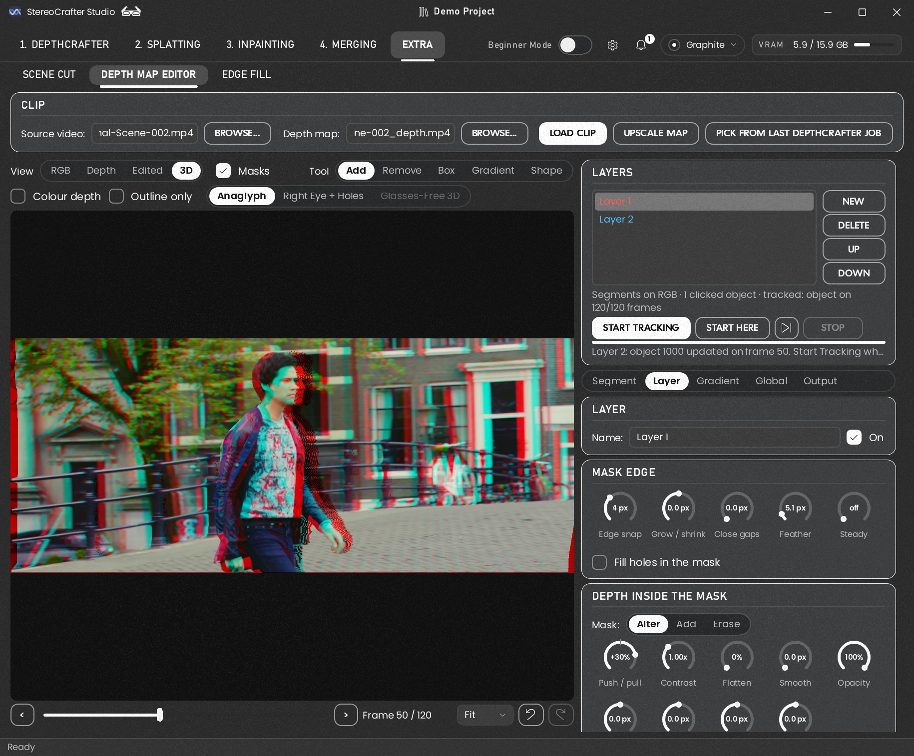
Rendering
On the Output page, press Render Edited Depth. The new map is saved in exactly the same format DepthCrafter uses, so every pixel your layers didn't touch stays exactly as it was. Save Project saves your layers without rendering; rendering saves them too, and they reopen with the clip next time.
Render at source resolution (on by default) writes the edited map at the source video's size, 1920 wide for a 1080p clip, instead of the depth map's. RGB layers then use SAM 3's full-size masks, so an object's real outline reaches Splatting at full detail, the way Detect Text's masks do, instead of being squeezed onto the depth map's much coarser pixels. The file is bigger and the render takes a little longer; Splatting runs as fast as before. A layer tracked before this option existed has no full-size masks yet: press Start Tracking once more to make them.
The RGB view is shown at up to 720p, finer than the depth map, so you can see what SAM 3 is outlining; with Render at source resolution on, the mask drawn on it is the full-size one Render uses. A clip too long to hold at 720p (over about a thousand frames of 1080p) is shown at the depth map's size instead. The Depth and Edited views stay at the depth map's size.
Upscale Map goes one step further and lets you edit at the source's resolution too -- see the next section.
Upscale Map: editing at the source's resolution
DepthCrafter makes its depth maps much smaller than the video -- 768x448 is typical, for a 1920x1080 clip. Each pixel of the map then covers about 2.5 x 2.5 pixels of the picture, and a clip opens in the editor at the map's own size. Every edit works in those coarse pixels: a mask's edge can only sit on the map's grid, and Grow, Feather and the edge dials move it in steps of about 2.5 picture pixels at a time. That's fine for big, simple objects. It isn't for thin or detailed ones -- fingers, hair, a railing, a pole, the gap under an arm -- which fall between the map's pixels and come out blocky or smeared into what's behind them.
Upscale Map, beside Load Clip, reads the loaded clip's depth map again, enlarged to the source video's resolution (1920x1080 for a 1080p clip). From then on every edit works in the clip's own pixels:
- Masks follow the object's real outline: RGB layers take SAM 3's full-size masks, which it already makes from the picture, instead of their copy squeezed onto the map's grid.
- The dials get finer. Grow, Feather and the edge dials step one picture pixel at a time, so you can tighten an edge by a single pixel instead of two or three.
- What you see is what renders. The Depth and Edited views show the map at the size it will be written, so there's no surprise when the render is enlarged afterwards.
Nothing is invented by upscaling: the map is enlarged the same way Splatting enlarges every depth map to the video's size before it splats (smoothly, bilinear), so anything you don't edit splats exactly as it did. What you gain is room to make your edits fine -- the extra resolution is filled by your masks and dials, not by guesswork.
How to use it:
- Load the clip with its Source video -- Upscale Map needs it, both for its size and for SAM 3's full-size masks. Without one the button stays greyed.
- Press Upscale Map. The status line counts the frames as they're read; the button then reads Map Upscaled, and the status line says the new size and the old one.
- Layers you already made come along. RGB layers switch to SAM 3's full-size masks; others (Depth layers, a layer tracked before full-size masks existed) are enlarged, and the status line names them -- press Start Tracking on those once more for SAM 3's full-detail outline. Shapes are drawn again at the new size, so they stay sharp.
- Check the pixel dials of layers made before upscaling. They keep their numbers, but the numbers now count picture pixels instead of map pixels: a Grow of 6 that reached about 15 picture pixels at 768x448 now reaches 6. Raise them to taste -- usually it's the chance to set them tighter than you could before.
- Edit, then Render Edited Depth as usual. The map is written at the source's size; Splatting runs as fast as before.
Use it when the object's outline matters: a person against a busy background, anything thin or see-through, an edge that shows as a stair-step or a halo in Splatting's preview. For a broad depth change (pushing a wall back, the whole frame's gamma) the map's own size is plenty, and quicker.
What it costs. The whole map is held in memory, two bytes a pixel: about 3 GB for 750 frames of 1080p, against about 0.5 GB at 768x448, and each preview frame takes longer to draw. Up to 6 GB is allowed -- about 1,500 frames of 1080p, or about 380 of a 4K clip; a clip longer than that stays at the map's size and the status line says so. Upscaling starts the Undo history afresh (Undo can't go back to the smaller map), and Load Clip goes back to the map's own size. A clip always opens at the map's size, so press Upscale Map again when you come back to it.
Use in Splatting, and the edit history
If you came from Splatting, Studio asks whether to use the render there. Use in Splatting puts the edited map in place of the original, so Splatting's preview and its batch both read it.
Nothing is lost: the map it replaces, the original or an earlier edit, is kept in an
edit_history folder beside the depth maps. To go back, edit again from the original
or copy it back from there. Multi-Map ignores that folder.
When something isn't right
| Erase leaves a smear or the object's edge | Raise Grow px so ROSE repaints a little past the object, or try another Seed; check the mask covers the whole object first. |
| ROSE runs out of memory | Use a shorter Window or a smaller Size, and close other GPU jobs first. |
| The mask drifts off the object | Fix it on a frame where it's wrong, with Add or Remove, and track again. |
| A halo of wrong depth around the object | Raise Grow a little, or use Edge snap. |
| The change shows a hard line | Raise Feather. |
| Holes inside the selection | Tick Fill holes in the mask. |
| Out of graphics memory | Tick Keep video frames in system RAM, or Unload Model when you're done selecting. |
| Find doesn't find it | Try another word, or click the object instead. |